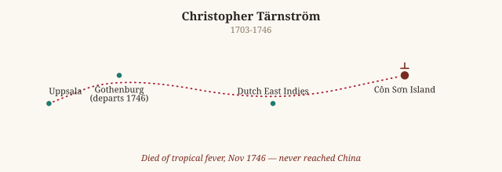
Christopher Tärnström
1703-1746
Sweden to China, via the Dutch East Indies -- got only as far as Côn Sơn Island off Vietnam
Not cited by Gould (botanist/entomologist apostle)
Tärnström was the first apostle Linnaeus ever sent out, and the expedition that should have proven the whole method worked instead became its first cautionary tale. Bound for China aboard a Swedish East India Company ship, he never got past Côn Sơn Island, off the Vietnamese coast, where a tropical fever killed him before a single specimen made it home. He'd left a wife and children behind; when Linnaeus heard, guilt reportedly stayed with him, and from then on he refused to send out any apostle who was married. The 'apostle' idea nearly ended with its very first attempt.
Checked against: Wikipedia: Apostles of Linnaeus

Pehr Kalm
1715-1779
Sweden to North America -- Pennsylvania, New Jersey, New York, and southern Canada
Not cited by Gould (botanist/entomologist apostle)
Kalm is the apostle whose trip actually went the way Linnaeus hoped every trip would: three and a half years touring the American colonies, a genuine friendship struck up with Benjamin Franklin, and a triumphant return with pressed plants and seeds by the crate-load. His own travel account, En Resa til Norra America, became a minor bestseller in its own right and is still read today as an outsider's snapshot of pre-Revolutionary America -- proof the apostle system could work exactly as intended, when nothing went wrong.
Checked against: Wikipedia: Apostles of Linnaeus
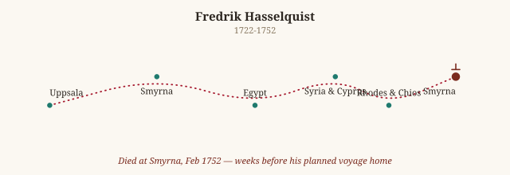
Fredrik Hasselquist
1722-1752
Eastern Mediterranean -- Turkey, Egypt, Syria, Cyprus, Rhodes, Chios, Smyrna
Cited by Gould — see “Hasselq. Iter Falsest” in the main Library
See the full entry under Hasselq. Iter Falsest -- died in Smyrna weeks before his planned voyage home, his debts and his collection both rescued only by Queen Louisa Ulrika's direct intervention.
Checked against: Wikipedia: Apostles of Linnaeus
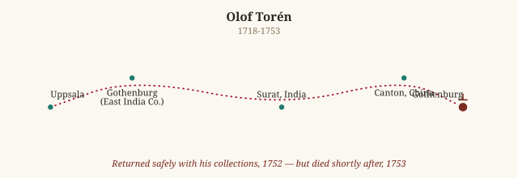
Olof Torén
1718-1753
India (Surat) and China (Canton/Guangzhou), as a Swedish East India Company chaplain
Not cited by Gould (botanist/entomologist apostle)
Torén sailed as a ship's chaplain rather than a dedicated naturalist, collecting on the side during Swedish East India Company voyages to Surat and Canton -- and he actually made it home with a substantial haul intact. The cruelty of his story is in the timing: he died in 1753, only shortly after returning, with barely any time to enjoy what he'd achieved or see what Linnaeus made of it.
Checked against: Wikipedia: Apostles of Linnaeus
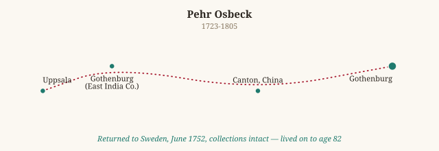
Pehr Osbeck
1723-1805
China (Canton/Guangzhou), aboard a Swedish East India Company vessel
Not cited by Gould (botanist/entomologist apostle)
Osbeck is one of the apostle programme's clean successes -- out to Canton and back on a Swedish East India Company run, home safe in June 1752 with his collections intact, and he lived to a genuinely old age (82) by the standards of the era, long enough to see the whole Linnaean project mature. His journal, Dagbok öfwer en Ostindisk Resa, became one of the more widely read apostle travelogues.
Checked against: Wikipedia: Apostles of Linnaeus
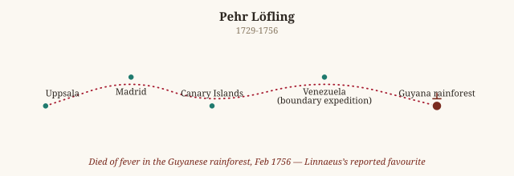
Pehr Löfling
1729-1756
Spain (Madrid, the Canary Islands) and then South America -- Venezuela and Guyana, on a Spanish crown boundary expedition
Not cited by Gould (botanist/entomologist apostle)
Löfling was Linnaeus's own favourite student, sent first to Spain and then recruited onto a Spanish crown expedition mapping the Venezuela-Brazil border -- exactly the kind of prestigious, well-resourced posting an apostle could hope for. It ended in the Guyanese rainforest in February 1756, most likely of a fever, one more name added to the list of apostles who never came home. Linnaeus was reportedly devastated -- of all seventeen, Löfling's death seems to have hit hardest.
Checked against: Wikipedia: Apostles of Linnaeus
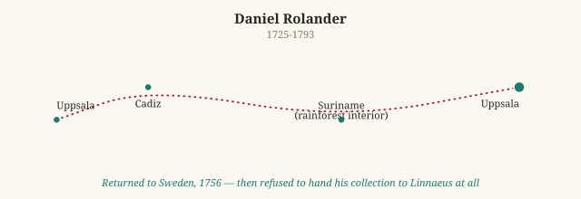
Daniel Rolander
1725-1793
Suriname, collecting through the rainforest interior
Not cited by Gould (botanist/entomologist apostle)
Rolander actually survived Suriname and came home -- and then, in the apostle programme's strangest twist, simply refused to hand his collection over to Linnaeus, souring what should have been a triumphant return into a bitter falling-out. It's a reminder that not every apostle's story is one of heroism or tragedy in the field; sometimes the real drama started only after the ship docked.
Checked against: Wikipedia: Apostles of Linnaeus
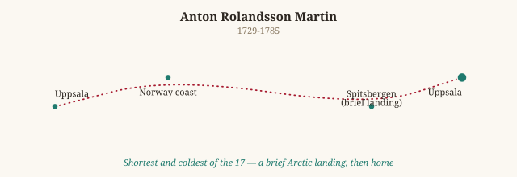
Anton Rolandsson Martin
1729-1785
Spitsbergen, in the Arctic archipelago of Svalbard
Not cited by Gould (botanist/entomologist apostle)
Martin's trip was the shortest and coldest of the seventeen -- a brief landing on Spitsbergen, deep in the Arctic, with barely any time ashore before the ship moved on. He still managed to bring back mosses and lichens worth Linnaeus's praise, proof that even a glancing brush with a place could count, if the apostle knew what to grab and how fast to grab it.
Checked against: Wikipedia: Apostles of Linnaeus
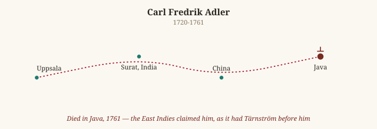
Carl Fredrik Adler
1720-1761
The East Indies -- Surat, China, and finally Java
Not cited by Gould (botanist/entomologist apostle)
Adler managed to send some material home before the East Indies claimed him too -- he died in Java in 1761, one more entry on the apostle programme's long casualty list from that part of the world (Tärnström and Adler both lost to Southeast Asia, a reminder of just how lethal the tropics were to Europeans with no acquired immunity, whatever their scientific ambitions).
Checked against: Wikipedia: Apostles of Linnaeus
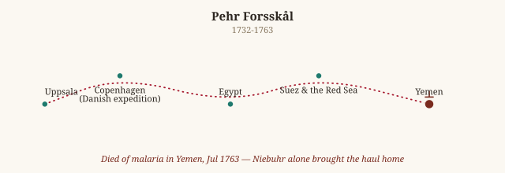
Pehr Forsskål
1732-1763
The Middle East -- Egypt, Suez, the Red Sea, Yemen, on the Danish-funded Arabia expedition
Not cited by Gould (botanist/entomologist apostle)
Forsskål joined the famous Danish Arabia expedition -- a rare case of an apostle travelling under someone else's flag and funding rather than Sweden's own. He died of malaria in Yemen in July 1763, before he could personally deliver what may have been the richest haul of the entire apostle programme; it fell to the expedition's sole survivor, Carsten Niebuhr, to bring the specimens and notes home instead, a story of loss softened only by another man's determination to finish what Forsskål started.
Checked against: Wikipedia: Apostles of Linnaeus
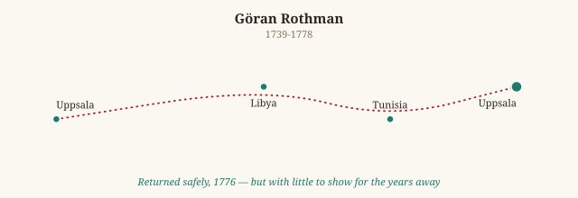
Göran Rothman
1739-1778
North Africa -- Libya and Tunisia
Not cited by Gould (botanist/entomologist apostle)
Rothman is the apostle programme's quiet disappointment rather than its tragedy -- he came home safely from North Africa in 1776, but with very little to show for the years away. Not every expedition Linnaeus funded paid off in specimens; sometimes the return on the investment was just a naturalist who'd survived, and not much else.
Checked against: Wikipedia: Apostles of Linnaeus
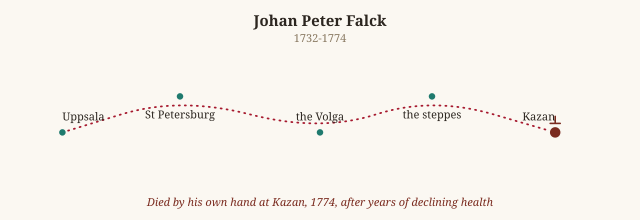
Johan Peter Falck
1732-1774
Russia -- the Volga, the steppes, Kazan
Cited by Gould — see “Falk. Reise” in the main Library
See the full entry under Falk. Reise -- opium addiction and depression during years in the Russian field, ending in suicide at Kazan in 1774; his journals were only published a decade later, assembled from the notes of a man who never lived to organise them himself.
Checked against: Wikipedia: Apostles of Linnaeus
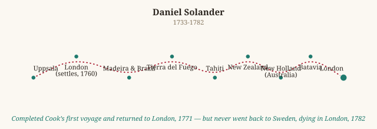
Daniel Solander
1733-1782
England, then the Pacific with Captain Cook's first voyage (Australia, New Zealand, Tahiti), and later Iceland
Not cited by Gould (botanist/entomologist apostle)
Solander is the apostle who got away, in the nicest possible sense -- sent to England to study, he simply never came back to Sweden, instead settling in as one of the most connected naturalists in London, sailing with Joseph Banks on Cook's first Endeavour voyage around the Pacific, and becoming a fixture of British science. Linnaeus, by most accounts, never received anything from him directly; Solander's real legacy went to Britain's museums and Banks's own collections instead, not to the teacher who'd sent him out in the first place.
Checked against: Wikipedia: Apostles of Linnaeus
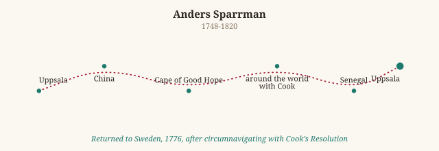
Anders Sparrman
1748-1820
China, then South Africa and around the world with Cook's second voyage, then Senegal
Cited by Gould — see “Sparrm. Mus. Carls” in the main Library
Sparrman is the one apostle whose name Gould's own citation list would recognise directly -- his Museum Carlsonianum (1786-89) is cited in Gould's synonymies as 'Sparrm. Mus. Carls'. His path there ran through the Cape of Good Hope, a full circumnavigation aboard Cook's Resolution on the second voyage (he joined at the Cape rather than sailing from England), and later an expedition into Senegal. He made it home to Uppsala in 1776 and lived to 72 -- one of the apostle programme's genuine full-circle successes, ending not just alive but still publishing decades later.
Checked against: Wikipedia: Apostles of Linnaeus
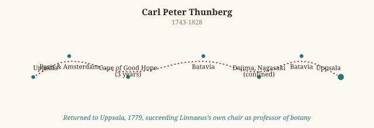
Carl Peter Thunberg
1743-1828
South Africa, then Japan (confined to the Dutch trading post of Dejima), then Java on the way home
Not cited by Gould (botanist/entomologist apostle)
Thunberg pulled off one of the era's great scientific end-runs: Japan was closed to virtually all Westerners, but as a doctor attached to the Dutch trading post at Dejima he got fifteen months of access no other European naturalist of his generation had, and came home to publish work that shaped Western botany's understanding of Japan for a century. He lived to 85, outliving nearly every other apostle, and became a professor at Uppsala himself -- Linnaeus's student turned the next generation's Linnaeus.
Checked against: Wikipedia: Apostles of Linnaeus
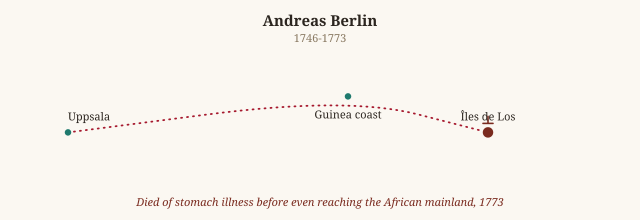
Andreas Berlin
1746-1773
West Africa -- Guinea and the Îles de Los
Not cited by Gould (botanist/entomologist apostle)
Berlin's expedition ended almost before it began -- a stomach illness killed him before he'd even reached the West African mainland, off the Îles de Los near Guinea. Of all seventeen apostles, his is one of the shortest, most abruptly cut-off stories: barely a footnote's worth of time in the field before the programme's steady toll of early deaths claimed one more name.
Checked against: Wikipedia: Apostles of Linnaeus
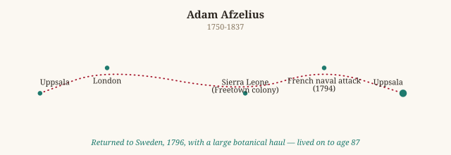
Adam Afzelius
1750-1837
Sierra Leone, collecting for several years around the fledgling colony at Freetown
Not cited by Gould (botanist/entomologist apostle)
Afzelius was the last of the seventeen, and one of the longest-lived -- he spent years around the new British colony at Sierra Leone (surviving a French naval attack on Freetown in 1794 along the way), came home safely in 1796 with a genuinely large haul of botanical specimens, and lived on to 87. By the time he died in 1837, Darwin was already a young man about to sail on the Beagle -- the apostle era and the next great age of naturalist-explorers briefly overlapping in one long Swedish lifetime.
Checked against: Wikipedia: Apostles of Linnaeus
No apostle matches that search.